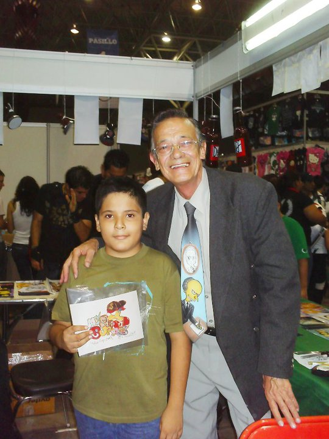

Mi nombre es Jesús Argenis Moya Tovar, aunque es de mi preferencia que me llamen Argenis, debido a que este es mi nombre más original y llamativo, así considero seré recordado con mayor facilidad, nací el 9 de diciembre del año 1998 en la ciudad de Monterrey, Nuevo León aproximadamente a las 2 de la tarde. Mi infancia no fue precisamente muy distinta a la de otros niños, vivía con mi madre y mi hermana, en mis primeros años viví con mis abuelos y mis tíos dado que mi madre trabajaba, mi padre había viajado a los estados unidos para trabajar como un inmigrante, volviendo así 3 años después; mis tías y mi madre me criaron junto a mis abuelos dándome así una infancia llena de cariño, mi abuela fallecería a mis 5 años por lo que mis memorias respecto a ella se encuentran bastante deterioradas, sin embargo ella fue sepultada el día de mi cumpleaños por lo cual nunca la podré olvidar.
Mis años de secundaria, en la Escuela Bernardo Alfonso Groussette, fueron bastante similares a mis años de escuela primaria, muy buenas calificaciones y aún presente mi problema de sobre peso, pero si he de mencionar algo remarcable es el desarrollo más amplio de mis hobbies e intereses durante esos 3 años; si bien años atrás, a pronta edad, mi gusto por la animación japonesa (anime) y el uso de la computadora estaba presente, al llegar a mi etapa de la secundaría este se vio más acentuado, empecé a asistir a las convenciones de videojuegos y anime por mi gusto a estos. Conforme pasaba el tiempo y al adentrarme más al uso de las computadoras surgió un deseo que aún busco realizar, que es el desarrollo de mi propio videojuego para ser más específico, una novela gráfica, esta idea surge por mi gusto a la lectura el cual también se desarrolló durante mis años de secundaría por la biblioteca de la escuela, un libro que sin duda recuerdo de entonces fue “El hotel azul” de Stephen Crane, su trama llena de tensión y un juego de culpas sin duda despertó mi interés en la lectura.

Mis pasatiempos actualmente son todos esos gustos que tuve entonces; mi principal hobbie es el jugar en línea en el computador, principalmente un juego competitivo muy popular llamado League Of legends; si bien este pasatiempo no es el más proactivo resulta ser muy divertido y emocionante para mí además de mantener en mi constantemente el sentido de competencia y de trabajo en equipo.
El segundo hobbie al que más le he dedicado tiempo y así mismo al que más le invertido en cuanto a dinero se refiere, es la lectura, centrándome en libros de misterio, terror y misterios, por ejemplo múltiples libros de leyendas de México de ediciones Horus, toda la saga de Robert Langdon, de Dan Brown así como algunas de las mejores obras de Stephen King; mi pasión de la lectura se enfatizó al entrar a la universidad, dado a que en horas libres no tenía algo en particular que hacer, también en mi librero se encuentran títulos de cultura general como lo son libros de historia universal y de política, algunos libros de medicina, programación, contabilidad, física y matemáticas, los cuales posea desde antes de orientarme a la ingeniería; como algo a mencionar, poseo unos pocos libros de automotivación, para aquellos días en que la vida parece incierta.
Por último, el hobbie que he tenido por casi toda mi vida es el Anime y el Manga de Japón; he de admitir que en estos últimos años el tiempo que le dedico es escaso pero eso no significa que en el pasado no haya estado fuertemente en ello; solía asistir a convenciones en Cintermex para tomar fotos y comprar mangas así como posters y revistas, comprar artículos vía web de Japón, como figuras de colección y cosas tradicionales, algo destacable para mí fue que en una de esas convenciones llegue conocer actores de doblaje como Mario Castañeda, Adrián Barba y Javier Franquelo, el doblador del Señor Burns de los Simpson en Latinoamérica.
Esto no es precisamente un hobbies pero es algo que quisiera mencionar; soy alguien apasionado por la naturaleza y los animales, me encanta ir a visitar zonas verdes y fotografiar todo aquello que me resulte interesante o cuanto menos particular, así sea la tela de una araña con esta en ella o el cauce de un arroyo, disfruto mucho de esos lugares también aunado a esto me encanta tener mascotas y rescatar animales de la calle, desafortunadamente no siempre puedo permitírmelo, el último caso fue el rescate de mi perro boxer “Tobi”, el cual llegó moribundo a casa pero hoy en día es un perro alegre , juguetón y muy noble, aunque su hermano mayor , mi Chihuahua “Rinty” no le quiere, el no se desanima y siempre anda corriendo por todas partes.
En cuanto a mi vida profesional, me gustaría trabajar en alguna empresa americana como John Deer o cuanto menos una buena empresa como Ternium, Caterpillar, Metalsa, por decir algunas; no tengo una idea muy clara de cual podría ser mi trabajo en esos ámbitos profesionales, dado que tengo ideas muy vagas al respecto por lo que mi hermana me ha mencionado pero si estoy seguro de buscar empleo en dichas empresas es por las buenas remuneraciones económicas así como la oportunidad de poder ir a trabajar e los Estados Unidos; por otra parte quiero trabajar como desarrollador independiente de videojuegos y en auditorias , tengo un muy buen amigo que busca realizar ese mismo trabajo por lo cual veo en él un compañero formidable para avanzar juntos en esos campos y ver crecer nuestras posibilidades.
Las ciudades o países que me gustaría viajar, es complicado para mí el escoger un destino por los temas de Xenofobia, inseguridad y los cambios de divisas pero dejando esos temas de lado, realmente quiero ir a conocer Colombia, Bolivia, Argentina, Chile, Todos los estados de México también, también deseo conocer Filadelfia, Nueva York, San Diego, Oregón, Arcanzas y Toronto en Canadá, muchísimos lugares realmente pero principalmente esos.
{kind=link}
{kind=link}
{kind=link}
{kind=link}
{kind=link}
{kind=link}